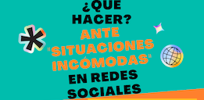
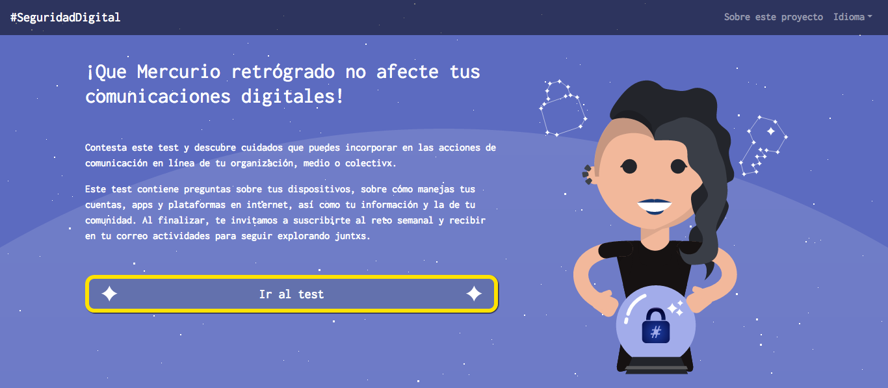
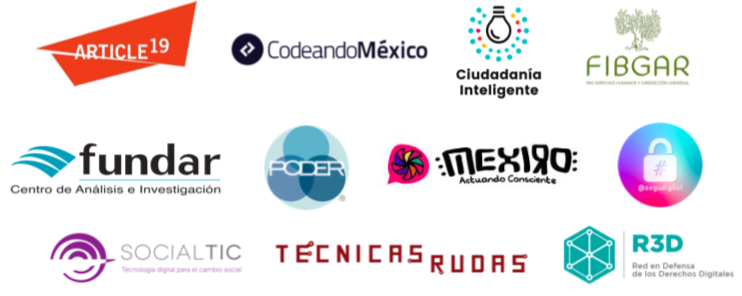
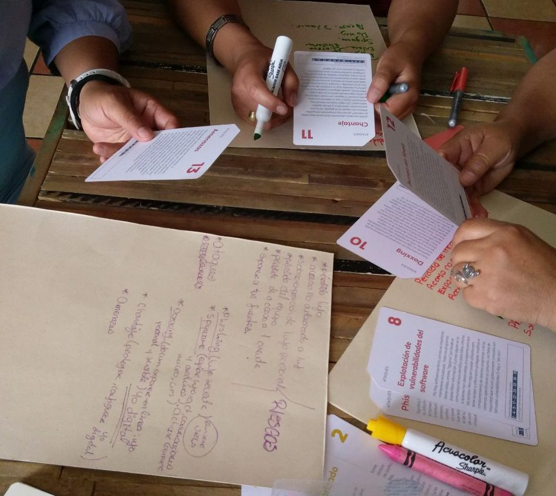

<!DOCTYPE html>
<html lang="en">
  <head>
    <meta charset="utf-8">
    <meta name="viewport" content="width=device-width, initial-scale=1, shrink-to-fit=no">
    <title>#SeguridadDigital</title>
    <link rel="shortcut icon" type="image/x-icon" href="./wp-content/themes/seguridaddigital/favicon.png">
    <link rel="stylesheet" href="./wp-content/themes/seguridaddigital/css/bootstrap.min.css">
	<link rel="stylesheet" href="./wp-content/themes/seguridaddigital/style.css">

<!-- Matomo -->
<script type="text/javascript">var _paq = _paq || [];
  /* tracker methods like "setCustomDimension" should be called before "trackPageView" */
  _paq.push(['trackPageView']);
  _paq.push(['enableLinkTracking']);
  (function() {
    var u="//piwik.seguridad-digital.org/";
    _paq.push(['setTrackerUrl', u+'piwik.php']);
    _paq.push(['setSiteId', '1']);
    var d=document, g=d.createElement('script'), s=d.getElementsByTagName('script')[0];
    g.type='text/javascript'; g.async=true; g.defer=true; g.src=u+'piwik.js'; s.parentNode.insertBefore(g,s);
  })();</script>
<!-- End Matomo Code -->
  </head>

  <body>
  	<!-- navar -->
	<div class="bg-blue-seg fixed-top">
		<nav class="navbar navbar-expand-lg navbar-dark">
		<a class="navbar-brand" href="./index.html">
			 <span class="text-hide">#SeguridadDigital</span>
		</a>
			<button class="navbar-toggler" type="button" data-toggle="collapse" data-target="#navbarSupportedContent" aria-controls="navbarSupportedContent" aria-expanded="false" aria-label="Toggle navigation">
			<span class="navbar-toggler-icon"></span>
			</button>

			<div class="collapse navbar-collapse" id="navbarSupportedContent">
		<ul id="primary-menu" class="navbar-nav ml-auto">
<li id="menu-item-222" class="menu-item menu-item-type-post_type menu-item-object-page menu-item-222 nav-item"><a href="./quienes-somos/index.html" class="nav-link">Quiénes somos</a></li>
<li id="menu-item-55" class="menu-item menu-item-type-taxonomy menu-item-object-category menu-item-has-children menu-item-55 nav-item dropdown">
<a href="#" class="nav-link dropdown-toggle" data-toggle="dropdown" id="navbar-dropdown-menu-link-55" aria-haspopup="true" aria-expanded="false">Blog</a>
<div class="sub-menu dropdown-menu" id="navbar-dropdown-menu-link-55">
<a href="./category/blog/epicfails/index.html" class="dropdown-item" id="menu-item-56">#EpicFails</a><a href="./category/blog/herramientas/index.html" class="dropdown-item" id="menu-item-57">Herramientas</a><a href="./category/blog/aprendizajes/index.html" class="dropdown-item" id="menu-item-58">Aprendizajes</a>
</div>
</li>
<li id="menu-item-59" class="menu-item menu-item-type-taxonomy menu-item-object-category menu-item-has-children menu-item-59 nav-item dropdown">
<a href="#" class="nav-link dropdown-toggle" data-toggle="dropdown" id="navbar-dropdown-menu-link-59" aria-haspopup="true" aria-expanded="false">Recursos</a>
<div class="sub-menu dropdown-menu" id="navbar-dropdown-menu-link-59">
<a href="./category/recursos/guias/index.html" class="dropdown-item" id="menu-item-60">Guías</a><a href="./category/recursos/interactivos/index.html" class="dropdown-item" id="menu-item-61">Interactivos</a>
</div>
</li>
<li id="menu-item-62" class="menu-item menu-item-type-taxonomy menu-item-object-category menu-item-62 nav-item"><a href="./category/replicar/index.html" class="nav-link">Replicar</a></li>
<li id="menu-item-129" class="menu-item menu-item-type-post_type menu-item-object-page menu-item-has-children menu-item-129 nav-item dropdown">
<a href="#" class="nav-link dropdown-toggle" data-toggle="dropdown" id="navbar-dropdown-menu-link-129" aria-haspopup="true" aria-expanded="false">Navegando juntas</a>
<div class="sub-menu dropdown-menu" id="navbar-dropdown-menu-link-129">
<a href="./category/navegando-juntas/index.html" class="dropdown-item" id="menu-item-130">Recursos</a>
</div>
</li>
</ul>	</div>
		</nav>
	</div>
	<!-- fin navar -->
	
	<!-- Anuncios -->
	<div class="mt-2">
			</div>
	<!-- fin Anuncios -->
	<!-- Contenido -->


	<div class="container-fluid">
		<div class="row small-gutters">
			<div class="col-12 col-md-9">
				<div class="row small-gutters home-post">
											
							<div class="col-12 col-md-6 col-lg-4">
														<!-- Artículo opcion 1 -->
								<div class="card border-ligh">
																		<a href="./que-hacer-ante-situaciones-incomodas-en-redes-sociales/index.html">
										<div class="card-img-overlay overf-h">
											<h5 class="card-title">¿Qué hacer ante situaciones incómodas en Redes Sociales?</h5>
											<p class="card-text">Recientemente hemos registrado que durante la pandemia se han incrementado prácticas de #acosoeninternet contra niñas, adolescentes, y mujeres. Nuestras aliadas de Yureni A.C. este #25N el ...</p>
										</div>
									</a>
									<div class="card-footer border-ligh">
										<small class="text-muted">4 diciembre, 2021 / <a href="./category/recursos/guias/index.html" rel="category tag">Guías</a></small>
									</div>
								</div>
							<!-- fin Artículo opcion 1 -->
						
													</div>

				


											
							<div class="col-12 col-md-6 col-lg-4">
														<!-- Artículo opcion 1 -->
								<div class="card border-ligh">
																		<a href="./test-que-mercurio-retrogrado-no-afecte-tus-comunicaciones-digitales/index.html">
										<div class="card-img-overlay overf-h">
											<h5 class="card-title">Test: ¡Que Mercurio retrógrado no afecte tus comunicaciones digitales!</h5>
											<p class="card-text">El equipo de #SeguDigital lanza con mucho entusiasmo el recurso titulado “¡Que Mercurio retrógrado no afecte tus comunicaciones digitales!”. Este proyecto persigue animar la exploraci...</p>
										</div>
									</a>
									<div class="card-footer border-ligh">
										<small class="text-muted">19 junio, 2020 / <a href="./category/recursos/interactivos/index.html" rel="category tag">Interactivos</a>, <a href="./category/navegando-juntas/index.html" rel="category tag">Recursos</a></small>
									</div>
								</div>
							<!-- fin Artículo opcion 1 -->
						
													</div>

				


											
							<div class="col-12 col-md-6 col-lg-4">
														<!-- Artículo opcion 1 -->
								<div class="card border-ligh">
																		<a href="./escogiendo-apps-para-descargar-en-tus-dispositivos/index.html">
										<div class="card-img-overlay overf-h">
											<h5 class="card-title">Escogiendo apps para descargar en tus dispositivos</h5>
											<p class="card-text">Foto: Rob Hampson Todxs descargamos nuevas apps en nuestro telefóno cada cierto tiempo, sin embargo ¿qué tanto nos informamos antes de descargarlas?&#8230; Es importante hacer una breve i ...</p>
										</div>
									</a>
									<div class="card-footer border-ligh">
										<small class="text-muted">15 junio, 2020 / <a href="./category/recursos/guias/index.html" rel="category tag">Guías</a>, <a href="./category/recursos/index.html" rel="category tag">Recursos</a></small>
									</div>
								</div>
							<!-- fin Artículo opcion 1 -->
						
													</div>

				


											
							<div class="col-12 col-md-6 col-lg-4">
														<!-- Artículo opcion 1 -->
								<div class="card border-ligh">
																		<a href="./respaldos-cifrados-en-linea-y-en-fisico/index.html">
										<div class="card-img-overlay overf-h">
											<h5 class="card-title">Respaldos cifrados en línea y en físico</h5>
											<p class="card-text">A menudo nos preguntan ¿Qué es mejor respaldar en físico o en línea? Y la respuesta rápida siempre es: depende. Piensa, ¿dónde te sería más fácil hacer tus respaldos? ¿Cuáles son ...</p>
										</div>
									</a>
									<div class="card-footer border-ligh">
										<small class="text-muted">13 abril, 2020 / <a href="./category/blog/herramientas/index.html" rel="category tag">Herramientas</a></small>
									</div>
								</div>
							<!-- fin Artículo opcion 1 -->
						
													</div>

				


											
							<div class="col-12 col-md-6 col-lg-4">
														<!-- Artículo opcion 1 -->
								<div class="card border-ligh">
																		<a href="./que-hago-para-cifrar-mis-dispositivos/index.html">
										<div class="card-img-overlay overf-h">
											<h5 class="card-title">¿Qué hago para cifrar mis dispositivos?</h5>
											<p class="card-text">La muy buena noticia es que hoy en día cifrar los dispositivos y equipos de cómputo es muy fácil. Recuerda siempre hacerlo con el dispositivo cargado y conectado a la corriente. Además d ...</p>
										</div>
									</a>
									<div class="card-footer border-ligh">
										<small class="text-muted">13 abril, 2020 / <a href="./category/blog/index.html" rel="category tag">Blog</a>, <a href="./category/recursos/guias/index.html" rel="category tag">Guías</a></small>
									</div>
								</div>
							<!-- fin Artículo opcion 1 -->
						
													</div>

				


											
							<div class="col-12 col-md-6 col-lg-4">
														<!-- Artículo opcion 1 -->
								<div class="card border-ligh">
																		<a href="./censura-en-plataformas-de-redes-sociales-comerciales/index.html">
										<div class="card-img-overlay overf-h">
											<h5 class="card-title">Censura en plataformas de redes sociales comerciales</h5>
											<p class="card-text">Foto: Digital Trends Las plataformas de redes sociales se han convertido en espacios públicos donde las personas, a través de una cuenta, podemos expresarnos y difundir diversidad de conte ...</p>
										</div>
									</a>
									<div class="card-footer border-ligh">
										<small class="text-muted">13 abril, 2020 / <a href="./category/recursos/guias/index.html" rel="category tag">Guías</a>, <a href="./category/navegando-juntas/index.html" rel="category tag">Recursos</a></small>
									</div>
								</div>
							<!-- fin Artículo opcion 1 -->
						
													</div>

				


											
							<div class="col-12 col-md-6 col-lg-4">
														<!-- Artículo opcion 1 -->
								<div class="card border-ligh">
																		<a href="./la-plataforma-de-alertadores-de-la-sfp-no-puede-proteger-de-forma-efectiva-a-los-denunciantes-sin-una-ley-nacional-de-alertadores/index.html">
										<div class="card-img-overlay overf-h">
											<h5 class="card-title">La Plataforma de Alertadores de la SFP no puede proteger de forma efectiva a los denunciantes sin una Ley Nacional de Alertadores</h5>
											<p class="card-text">Descarga documento en PDF Ciudad de México, 26 de julio de 2019. La Secretaría de la Función Pública (SFP) del Gobierno de México anunció la puesta en marcha de la plataforma Alertador ...</p>
										</div>
									</a>
									<div class="card-footer border-ligh">
										<small class="text-muted">26 julio, 2019 / <a href="./category/sin-categoria/index.html" rel="category tag">Sin categoría</a></small>
									</div>
								</div>
							<!-- fin Artículo opcion 1 -->
						
													</div>

				


											
							<div class="col-12 col-md-6 col-lg-4">
														<!-- Artículo opcion 1 -->
								<div class="card border-ligh">
																		<a href="./taller-de-seguridaddigital-en-guelatao-oaxaca/index.html">
										<div class="card-img-overlay overf-h">
											<h5 class="card-title">Taller de #SeguridadDigital en Guelatao, Oaxaca</h5>
											<p class="card-text">Nos vemos el sábado 10 de agosto de 10 de la mañana a 4 de la tarde en Guelatao de Juárez, Oaxaca para un taller sobre violencia basada en género relacionada con tecnología. El taller e ...</p>
										</div>
									</a>
									<div class="card-footer border-ligh">
										<small class="text-muted">13 julio, 2019 / <a href="./category/blog/index.html" rel="category tag">Blog</a></small>
									</div>
								</div>
							<!-- fin Artículo opcion 1 -->
						
													</div>

				


											
							<div class="col-12 col-md-6 col-lg-4">
														<!-- Artículo opcion 1 -->
								<div class="card border-ligh">
																		<a href="./comunidad-de-aprendizaje-seguridaddigital-con-mujeres-periodistas/index.html">
										<div class="card-img-overlay overf-h">
											<h5 class="card-title">Comunidad de Aprendizaje #SeguridadDigital con Mujeres Periodistas Independientes</h5>
											<p class="card-text">Durante junio de 2019, realizamos una serie de talleres con mujeres periodistas de Puebla y Tlaxcala. A continuación, compartimos las dinámicas y recursos que realizamos durante las cinco  ...</p>
										</div>
									</a>
									<div class="card-footer border-ligh">
										<small class="text-muted">1 julio, 2019 / <a href="./category/replicar/index.html" rel="category tag">Replicar</a></small>
									</div>
								</div>
							<!-- fin Artículo opcion 1 -->
						
													</div>

				


											
							<div class="col-12 col-md-6 col-lg-4">
														<!-- fin Artículo opcion 2 -->
								<div class="card bg-light text-white mb-3 border-ligh">
									<a href="./hablemos-de-violencia-relacionada-con-la-tecnologia/index.html" class="text-white">
										<div class="card-body bg-info card-home overf-h">
											<h5 class="card-title">Hablemos de violencia relacionada con la tecnología</h5>
											<p class="card-text">¿Qué es? ¿Cómo estamos enfrentándola? En #SeguridadDigital queremos abrir un espacio entre mujeres para hablar sobre la violencia que es mediada a través de las tecnologías, para comp ...</p>
									</div>
									</a>
									<div class="card-footer">
										<small class="text-muted">13 junio, 2019 / <a href="./category/sin-categoria/index.html" rel="category tag">Sin categoría</a></small>
									</div>
								</div>
							<!-- fin Artículo opcion 2 -->
													</div>

				


									</div>

				<ul class="pagination justify-content-center mt-3">
<li class="page-item disabled"><span class="page-link">Recientes</span></li>
	<li class="page-item"><span aria-current="page" class=" current">1</span></li>
	<li class="page-item"><a class="page-link" href="./page/2/index.html">2</a></li>
	<li class="page-item"><a class="page-link" href="./page/3/index.html">3</a></li>
	<li class="page-item"><a class="page-link" href="./page/2/index.html">Anteriores</a></li>
</ul>
 

			</div>
			<!-- sidebar derecha -->
			<div class="col-12 col-md-3">
					<div class="mt-2">
		<div id="search-2" class="widget widget_search"><form method="get" id="searchform" action=".//">


	<div class="input-group mb-3">
		<input type="text" class="form-control" aria-label="Buscar en #SeguridadDigital" name="s" id="s" placeholder="Buscar en #SeguridadDigital">
		<div class="input-group-append">
			<button class="btn btn-outline-secondary" type="submit"><span class="icon-search"></span></button>
		</div>
	</div>
</form></div>
<div id="media_image-2" class="widget widget_media_image"><a href="./sexting/index.html"></a></div>
<div id="custom_html-2" class="widget_text widget widget_custom_html"><div class="textwidget custom-html-widget">
<a class="twitter-timeline" data-height="450" data-dnt="true" data-link-color="#53acb6" href="https://twitter.com/segudigital?ref_src=twsrc%5Etfw">Tweets by segudigital</a> <script async src="https://platform.twitter.com/widgets.js" charset="utf-8"></script>
</div></div>	</div>
			</div>
			<!-- fin sidebar derecha -->
		</div>
	</div>
	<!-- fin Contenido -->

	<!-- Footer -->
	<div class="footer_top mt-5">
		<div class="container">
			<div class="row my-2">
				<div class="col-md-4">
									</div>
				<div class="col-md-4">
									</div>
				<div class="col-md-4">
									</div>
			</div>
		</div>
		<div class="footer">
			<footer class="text-center container">
				<p><small><a class="pgp" href="https://pgp.mit.edu/pks/lookup?op=get&search=0xD9203908A5FE1DF2" target="_blank">PGP key 0xd9203908a5fe1df2</a><br><span class="opa">780C 7BC8 5594 49BF 1AE9 DED3 D920 3908 A5FE 1DF2<span></span></span></small></p>
				<a rel="license" href="http://creativecommons.org/licenses/by-nc-sa/4.0/"></a><br>
				<small class="opa">Ningún derecho reservado</small><br>
			</footer>
		</div>
	</div>
	<!-- fin Footer -->

		<script src="./wp-content/themes/seguridaddigital/js/jquery-3.2.1.slim.min.js"></script>
		<script src="./wp-content/themes/seguridaddigital/js/popper.min.js"></script>
		<script src="./wp-content/themes/seguridaddigital/js/bootstrap.min.js"></script>
	</body>
</html>